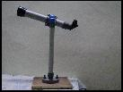

Resources
Telescopes --
An 8'' Newtonian reflector telescope with Altazimuth mount.
- A 6'' Newtonian reflector telescope with equatorial mount.
- A 6'' Dobsonian telescope.
- A 4.5 mm refractor telescope with achromatic lens.
Various accessories such as eyepieces, viewfinders are there along with the telescopes. We also have a solar filter to observe the Sun during solar eclipses.
Binoculars- Three pairs of binoculars.
SLR camera- to take photographs of deep sky objects. It has a tripod for mounting and a telephoto lens for increased magnification.
Complete set of star maps and guides
Books
kept for reference purposes: